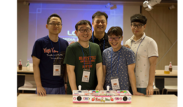
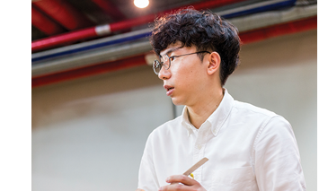
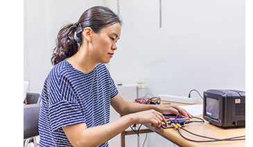
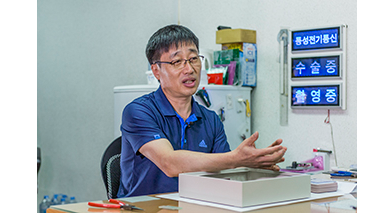
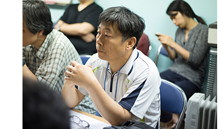
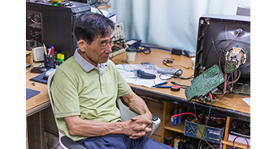
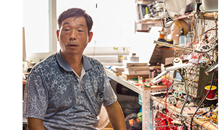
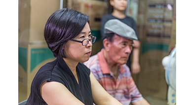
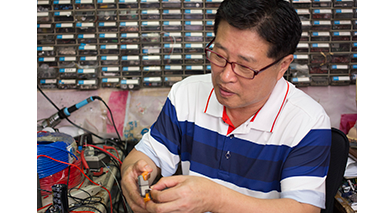
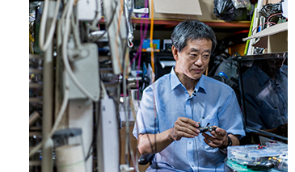

‘메이커스 플랫폼 Maker’s Platform’은 스스로 만들고 탐구하던 사람들이 모여 40여 년의 기술력을 보유한 세운상가의 생태계에 주목하여, 장인의 노동(work)과 메이커의 만들기(make)의 교차점에서 제작문화(Maker Culture)의 가능성을 탐색한 프로그램이다. 12회에 걸친 기술교류의 시간을 통해 메이커(maker)와 마스터(master)는 공동의 지식과 경험으로 새로운 워크숍의 아이템을 기획·개발하였다. 메이커는 전자기기 제작과 유통의 메카였던 세운상가의 역사성과 접점을 갖는 아이템을 개발하는데 있어 장인들의 작업장(workshop)에서 축적된 기술과 노하우를 접목시켜 워크숍으로 선보인다.
산딸기마을
청계천 인쇄기술자, 벤처기업 종사자, 소프트웨어 개발자 등으로 구성된
팀. 비전문가를 위한 직업 외의 ‘딴 짓’으로 다양한 메이커
활동을 해나가고 있다. 비전문가를 위한 공동제작프로젝트를 통해
시민과 교감하며, 누구나 쉽게 메이커가 되기를 희망한다.

서영배│하드카피월드 대표
Tech D.I.Y. 메이커를 위한 다양한 기술자료와 매뉴얼, 소스를 제공하는
커뮤니티 하드카피월드 운영. 아두이노 강좌를 비롯하여 각종 통신 모듈
매뉴얼을 제공함으로써 번뜩이는 아이디어를 공유하고 실제로 구현할 수
있는 정보들을 제공하고 있다.
유상준│리틀보이사이언 대표
디자이너, 아티스트, 메이커 활동을 하면서 시야를 넓혀
‘리틀보이사이언’을 창업. 고양이와 반려인을 위한 스마트 장난감
‘캣치캣츠’를 개발하여 크라우드 펀딩을 통해 성공적으로 런칭하며
메이커로서 시도한 새로운 1인 비즈니스로 주목을 받고 있다.

전유진│미디어아티스트
컴퓨터 공학과 컴퓨터 음악을 공부하고, 음악활동으로 창작을 시작한
아티스트이자 작곡가. 디지털 디바이스를 활용해 관람자의 참여를
유도하는 작업을 해왔으며 아날로그와 디지털의 공존방식과 모든
물질에 내재된 소리의 가능성을 탐구하는 일에 관심을 두고 있다.

권영길│동성전기통신
병원에서 사용하는 특수 인터폰 관련 제품만 전문적으로 디자인하고
개발해 온 제작자. 35년 동안 사용자의 요구사항을 수정하고 반영하는 과정을 통해, 특허는 물론 십 년
이상 사용하는 견고한 제품을 생산하고 있다.

설영복│특수전자
개발자들과의 솔직한 커뮤니케이션을 최우선으로 생각하고
유저(user)가 원하는 대로 노력하는 수리•개발자. 맨땅에 헤딩하듯이
하나씩 부품을 사면서 눈치껏 물어보고, 노트에 색 띠를 메모하면서
기술을 익혔다.

이정성│아트마스터
1986년 ‘전자박람회’에서 520대의 멀티비전 화면을 처음 선보인
전자기술디렉터. 이를 계기로 1987년부터 백남준이 타계한 2006년까지 작품활동에 대한 조언은 물론,
끊임없는 실험과 탐구를 바탕으로 백남준이 디자인한 이미지를 시각화함에 있어 전자기술적 해법을 제시했다.

이천일│자연기술랩
아르바이트로 시작해 세운상가와 함께 40여 년의 기술을 보유하게 된
기술자. 90년대에는 일본의 애니메이션 로봇 전문회사인 고코로
(Kokoro)에서 사이보그의 일종인 말하는 로봇, 공룡 로봇 등을
제작하였다. 빠른 속도로 발전하는 부품들의 성능과 사용법을 습득하기
위해 여전히 공부하며 만드는 중이다.

조수웅ㆍ장은진│홍인전자
전자회로를 스스로 실습하고 탐구할 수 있는 브레드보드(breadboard)
실험 키트를 국내에서 처음으로 설계•제작한 연구자. 4권의 『브레드보드
길라잡이』 교재를 자체 제작하고, 매주 일요일마다 브레드보드 무료
강연을 진행하여 전기전자과학을 배우는 학생들을 위한 교육에도 힘쓰고
있다.

차광수│차산전력
IT 강국이 되기 위해서는 집집마다 특허증을 보유해야 한다고 말하는
발명가. 산골에 살면서 전기 사용이 어렵던 어린 시절을 떠올리며,
친환경 에너지에 보탬이 되는 효율 좋은 발전기를 만들기 위해 새로운
발상과 기술을 연마하고 있다.

한영만│현성Hi-Tech
수리기사에서 시작하여 레이저 인스펙션 시스템(laser inspection
system), 지중 매설 케이블 탐사장치 등 여러가지 정부 시책을 완료한
시스템 개발자. 계측기의 표준을 잡던 경험을 바탕으로 사용자, 수리,
디자인의 편의성을 기준으로 삼아 회로를 설계하고 있다.
